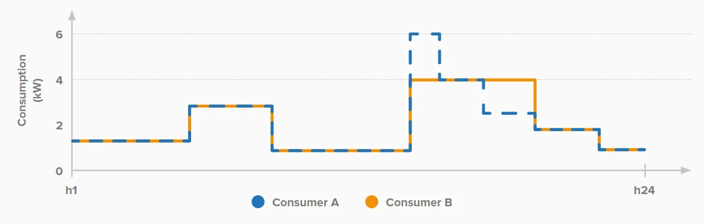

The customer interface
Bills and charging structures translate network design into a customer-facing signal.
Implicit flexibility through network-use price signals
A network tariff is more than a bill; it is the grid's quiet instruction about when, where, and how capacity should be used.
Network tariffs primarily recover network costs, but their structure can also influence the timing, location, and magnitude of withdrawals and injections. Because this flexibility is implicit rather than contracted, the design must connect a real network cost driver to a response that customers can understand and deliver. We respectfully invite your expert guidance to make tariff design more effective, fair, evidence-based, and compatible with explicit flexibility procurement.
Overview and orientation
Tariff design is the implicit branch of the flexibility-acquisition portfolio. It does not buy a specific activation; instead, it changes the economic conditions under which many users make ordinary consumption, charging, storage, and injection decisions.
Bills and charging structures translate network design into a customer-facing signal.
Renewables, electrification, storage, and EV adoption alter when and where network costs arise.

The same tariff can produce different value depending on local topology, hosting capacity, and flexibility potential.
Our proposal
We propose reviewing tariff design through six linked questions: what cost driver is represented, who is exposed, how granular the signal is, what response is feasible, how fairness is protected, and how the tariff coordinates with explicit flexibility procurement.
The philosophy is preventive rather than reactive. A credible tariff should reveal a network-relevant cost driver early enough for users or automated technologies to respond, while preserving simplicity, predictability, affordability, and the legitimate cost-recovery function of network charges.
How smart should a tariff become before it stops being transparent, predictable, or neutral?
Why it matters
A tariff may reduce a peak, shift it to another hour, distort a local-market baseline, or place risk on users who cannot respond. Effectiveness therefore has to be tested against physical, behavioural, regulatory, and distributional outcomes.
The opportunity is to reduce recurring peaks, improve hosting capacity, and defer efficient reinforcement. The challenge is that an implicit response is uncertain: some users cannot respond, several price signals may conflict, rebound can create a new peak, and highly dynamic tariffs can contaminate baselines for explicit flexibility services.
Who is affected?
DSOs, regulators, retailers, aggregators, customers, EV owners, storage operators, generators, and consumer representatives all experience different parts of the tariff design.
Where is it applicable?
Tariffs are strongest where network stress has recurring temporal, capacity, or locational drivers and where customers have enough information and controllability to respond.
Shared review structure
Each dimension below is a separate review environment. Open a card to read the full explanation and leave focused comments on that exact design dimension.
What physical and economic network cost should the tariff represent?
Open detailed review page →02How precisely should the tariff identify when and where network use is costly?
Open detailed review page →03Can the exposed customers change consumption or injection in the required way?
Open detailed review page →04How should costs, benefits, risks, and opportunities be distributed?
Open detailed review page →05How should tariffs coexist with retail prices, balancing, local markets, and connection conditions?
Open detailed review page →06How will the tariff be tested, monitored, and revised after implementation?
Open detailed review page →
Tariff alternatives can produce very different cost outcomes across customers and EV-adoption scenarios.

The same underlying demand can respond differently depending on incentives, automation, and constraints.
Feedback environment
Start with the six review dimensions. Each one has a dedicated page with a clear definition, design alternatives, stakeholder implications, evidence requirements, and its own feedback form and discussion box.
Interactive stakeholder challenge
Open each card to see targeted questions for the corresponding stakeholder group.
Can the tariff demonstrably reduce the network need at the relevant place and time?
How far can cost-reflectivity go before affordability and predictability are undermined?
Can the network tariff coexist with wholesale, balancing, and local-market signals?
Is the tariff understandable, actionable, and worth responding to?
Final contribution
Share regulatory examples, tariff studies, data, figures, or implementation lessons.